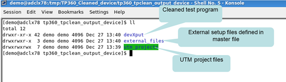
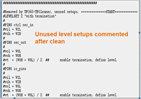
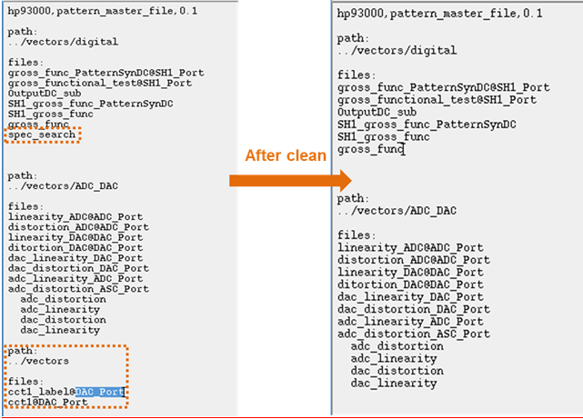
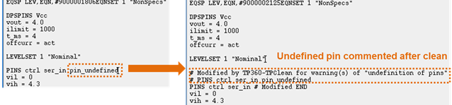

Programs after cleaning
After cleaning a testflow setup with the Test Program Cleaner, a cleaned device (test program) is generated. In this cleaned device (test program), the unused setups are either commented or removed from the related setup files.
The output directory structure
After the clean process is completed, three directories will be created under the output directory, these are:
- Device directory.
- Collected external file/directories.
- Collected UTM projects.

Pin settings after cleaning
Redundant pins cause warning messages of "redefined pins" in SmarTest.
The Test Program Cleaner removes the redundant pins from the level and timing files without changing the other setups in these files. In some cases, the Test Program Cleaner replaces pin group names with the related pin lists.
Level and timing setups after cleaning
The Test Program Cleaner comments the unused timing and level setups in the level and timing files, as illustrated in the following graphic.

The master file after cleaning unused vector setups
The Test Program Cleaner modifies the master file after cleaning unused vector setups.

Digital pins setups after cleaning
The Test Program Cleaner removes all setups (such as level, timing and vector setups) associated with the undefined digital pins.

The other changes after cleaning
- Cleaning an unused burst also removes its associated labels.
- Cleaning an unused main label also removes its associated subroutines.
Functional changes
- Introduced in SmarTest 7.2.2